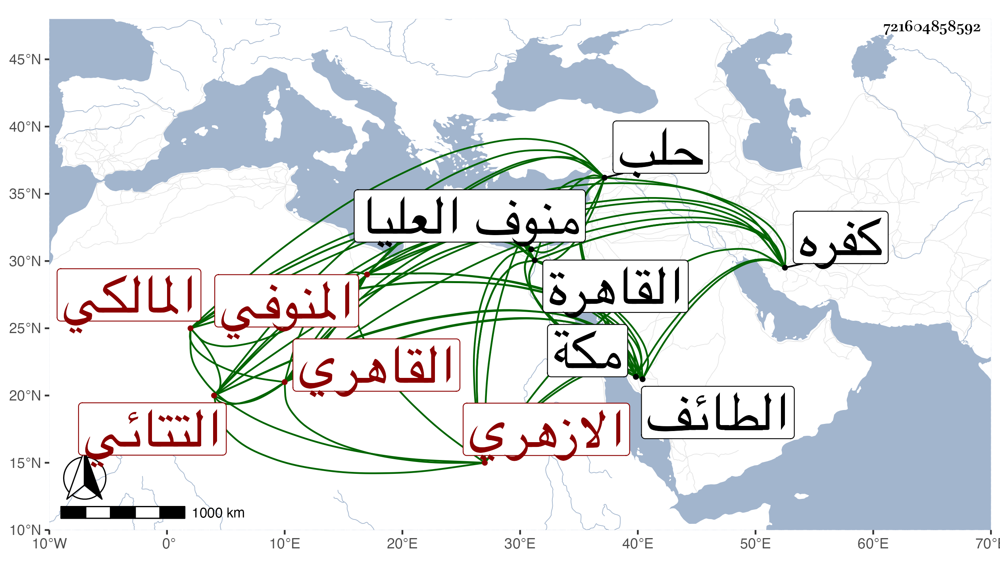

0902Sakhawi.DawLamic.ITO20230111-ara1.EIS1600.721604858592
Biography ID: 721604858592
429
حسن بن علي بن حسن بن علي بن سليمان بن عز العرب بن علي بن فضالة بن عز العرب بن فضل بن فضالة البدر أبو الضياء بن النور الغمريني وربما قيل له التتائي المنوفي ثم القاهري الازهري المالكي ، ويعرف بابن مشعل . ولد بكفر يعرف ببني غمرين مجاور لتتا وكلاهما من قرى منوف العليا من الجهة البحرية وقرأ بها القرآن عند الفقيه هرون وغيره ، ثم تحول إلى القاهرة سنة إحدى وأربعين فنزل رواق الريافة من الأزهر وحفظ الرسالة وألفية النحو وعرض على شيخنا والقاياتي وابن البلقيني ، وحضر دروس أبي القاسم النويري وقرأ على ابن المجدي في النحو والفرائض وعلى ابن قديد في الصرف ثم على السنهوري في الفقه وغيره ، وصحب الانصاري وسافر معه في سنة خمس وأربعين إلى حلب وأخذ بها عن ابن الشماع وحج غير مرة وجاور وزار الطائف وكان بمكة مع الانصاري حين مات ومسه بعده مكروه بسببه وتحول إلى الشمام فقطنها وناب عن قاضيها بل ناب قبل بالقاهرة عن اللقاني وذكر أن والده كان من شيوخ أهل تلك الناحية وأنه عمر مائة وثمان سنين وهو كامل الأعضاء والحركات .
